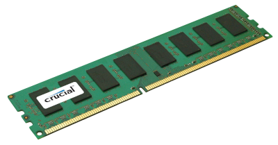
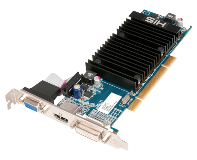
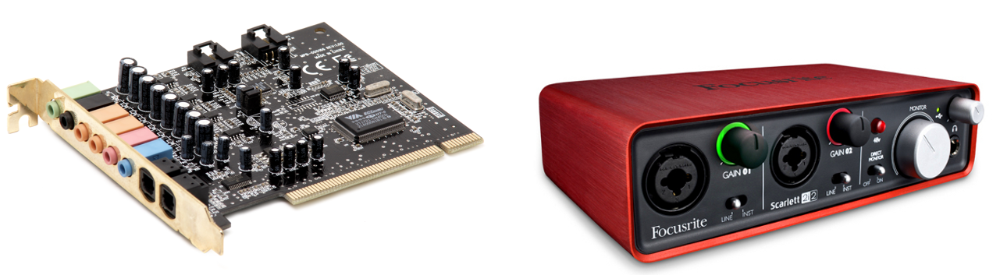
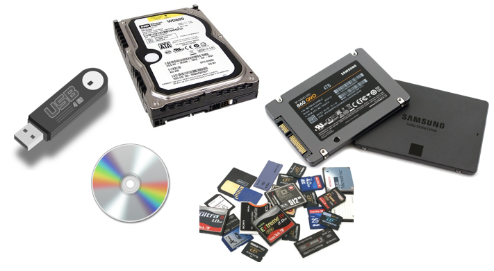

Inside the Machine
Objectives
- To recognize and name key hardware components found inside a computer system, including the motherboard, CPU, graphics card, sound card, network card, secondary storage devices, and power supply unit.
Inside all computers are a number of components that need to work together. The way these are organised is known as the system architecture. In this section we'll review the main components and then dig in a little deeper in subsequent sections in this topic.
Take the lid of your computer and you will find the following:
- Motherboard
- Memory (RAM)
- Processor (CPU)
- Graphics card
- Sound card
- Network card
- Secondary storage (Hard drive, solid state drive, CD/DVD)
- Other components including cables, fan, heatsink, power supply
It's tempting to think we do not need to know about these and how they interact. It's a bit like saying we don't need to know how an engine works to drive a car. There is some truth in that but knowing how the hardware of the computer works, how the various components interact with each other will make what we do with software easier to understand. Also, when something goes wrong it's good to be able to pin down what might be causing the problem.
It's a good idea to read the following with the back off the computer so you can have a good look inside. This is more difficult with a laptop, and even harder with a smartphone. These devices will have all of the above components but they are usually hard-wired into the motherboard and thus harder to see (assuming you can even get the back off your laptop or smartphone).
Motherboard
A motherboard, also known as the mainboard or system board, is a central and essential component of a computer system. It is a large, flat circuit board that serves as the primary platform for connecting various hardware components, allowing them to communicate and work together. The motherboard acts as the central hub, providing electrical connections and pathways for data transfer between the CPU (Central Processing Unit), memory, storage devices, expansion cards, and other peripherals.
Key components and features found on a typical motherboard include:
- CPU Socket: This is where the CPU is installed. The CPU socket allows for a secure connection between the processor and the motherboard, enabling data and power transfer.
- Memory Slots (DIMM Slots): These slots hold the system's RAM (Random Access Memory) modules. The RAM provides temporary storage for actively used data and instructions, allowing for quick access by the CPU.
- Expansion Slots (PCIe, PCI, etc.): These slots allow for the installation of expansion cards such as graphics cards, sound cards, network cards, and other peripherals. PCIe (Peripheral Component Interconnect Express) is the most common type of expansion slot for modern motherboards.
- Chipset: The chipset is a set of integrated circuits that control the flow of data between the CPU, memory, storage devices, and peripherals. It includes the Northbridge and Southbridge components, each responsible for specific tasks.
- Storage Connectors (SATA, M.2, etc.): These connectors allow for the connection of storage devices such as hard drives (HDDs), solid-state drives (SSDs), and optical drives.
- Power Connectors: The motherboard has various power connectors, including the primary ATX power connector and supplementary connectors for CPU power. These connectors deliver power to the motherboard and its components.
- I/O Ports and Headers: The motherboard features ports and headers for connecting external devices such as USB, HDMI, Ethernet, audio, and more. I/O headers are used for connecting internal components like USB headers and front panel connectors.
- BIOS/UEFI Chip: The Basic Input/Output System (BIOS) or Unified Extensible Firmware Interface (UEFI) chip contains firmware that initializes the hardware during the boot process and provides basic system configuration.
- CMOS Battery: The CMOS (Complementary Metal-Oxide-Semiconductor) battery powers the CMOS memory, which stores system settings and the system clock even when the computer is powered off.
Note
Can you find each of these on your motherboard (or on the above diagram)?
You may also hear the term form factor which determines the physical size and layout of the board. Typically this will include ATX, microATX, and mini-ITX. The form factor influences the compatibility with computer cases and the number of available expansion slots.
Main Memory (RAM)
Main memory is a crucial component of a computer system that stores data and instructions that are actively being used by the CPU. It is a volatile form of memory, meaning it loses its content when the power is turned off. The primary purpose of main memory is to provide fast access to data for the CPU during program execution.

Main memory is commonly referred to as RAM (Random Access Memory), and it is used to temporarily store data that is actively being processed by the CPU. It allows for quick read and write operations, enabling efficient data manipulation. It is the interface between the larger, but slower, storage devices (hard drives) and the CPU.
The RAM comes in the form of a bank of memory chips slotted into the available slots on the motherboard. They come in various sizes e.g. 4Gb, 8Gb or larger. Thus, 2 banks of 8Gb RAM chips will provide 16Gb of memory in total for your system.
The Processor (CPU)
The processor (or, Central Procesing Unit) is the "brain" of any computer system. It is the crucial component responsible for executing instructions and performing calculations necessary for the computer to function. It plays a central role in processing data and managing the overall operation of the computer system.
As we'll see in a later section the processor has a number of sub-components:
- Arithmetic Logic Unit (ALU): The ALU is responsible for performing arithmetic and logic operations. It carries out tasks such as addition, subtraction, AND, OR, and comparison operations. The results of these operations are then used in further processing.
- Control Unit: The control unit manages the operations of the CPU. It fetches instructions from memory, decodes them, and directs the execution of the corresponding operations. It ensures that the instructions are executed in the correct sequence.
- Clock: The clock is a timing device that synchronizes the operations of the CPU. It generates a series of pulses at a specific frequency, known as the clock speed. The clock ensures that each operation within the CPU occurs at the right time.
- Registers: Registers are small, fast storage locations within the CPU. They store data that is immediately needed for processing. The CPU uses various types of registers, such as data registers and address registers, to efficiently manage information.
The speed of the processor, often expressed in terms of clock speed measured in Hertz (Hz) or Gigahertz (GHz), refers to how quickly the CPU can execute instructions. A higher clock speed indicates a faster processor. For example, a processor with a clock speed of 2.4 GHz performs 2.4 billion clock cycles per second.
Some CPUs have multiple processing cores, allowing them to handle multiple tasks simultaneously. More cores can lead to improved multitasking and overall performance, especially in applications designed to take advantage of parallel processing.
The CPU often includes a small, high-speed memory called a cache. A larger cache size can help store frequently used data and instructions closer to the CPU, reducing the need to access slower main memory and improving overall speed. The cache can be used to prefetch data and instructions from memory while waiting for the ALU to finish processing the previous operation.
Graphics Card
A graphics card, also known as a GPU (Graphics Processing Unit) or video card, serves the primary purpose of rendering and displaying visual information on a computer monitor. Its role is crucial in handling graphics-intensive tasks and offloading the graphical processing from the computer's main CPU (Central Processing Unit).

Here are the key purposes of a graphics card:
- Graphics Rendering: The primary function of a graphics card is to render and display images, videos, and graphical user interfaces (GUIs) on a computer monitor.
- 3D Graphics Processing: Graphics cards are particularly important for rendering complex 3D graphics in applications such as video games, 3D modeling software, and computer-aided design (CAD) programs. The specialized architecture of GPUs allows them to handle the mathematical calculations involved in rendering 3D environments efficiently.
- Video Playback and Decoding: Graphics cards include hardware components designed to accelerate video decoding. This feature is beneficial for playing high-definition videos and streaming content, as it offloads the video processing tasks from the CPU, freeing up resources for other computations.
- Parallel Processing: Modern graphics cards are equipped with a large number of parallel processing cores. This parallel architecture is well-suited for handling multiple tasks simultaneously, making GPUs highly efficient in performing parallel computations. This capability is utilized in applications like scientific simulations, machine learning, and parallel computing tasks.
In gaming, graphics cards play a critical role in determining the visual quality and performance of games. A powerful graphics card can handle advanced rendering techniques, higher resolutions, and smoother frame rates, enhancing the overall gaming experience. This may not be needed for a standard desktop computer that does nto require such intensive graphics processing and most major motherboards will come equipped with its own integrated graphics cards. But, if you're into gaming you may need to upgrade!
Graphics cards may also support multiple monitors.
Sound card
A sound card, also known as an audio card or audio interface, is a hardware component designed to process and manage audio data in a computer system. Its primary purpose is to provide audio input and output capabilities, allowing users to hear sound and record audio through their computer. As with the graphics card offloading the rendering of audio can provide an additional boost to a computer system and provides enhanced sound quality.
Some audio interfaces are provided as an external component for a computer system and is generally preferred by studio musicians.

The key purposes of a sound card are:
- Audio Playback: The fundamental function of a sound card is to enable audio playback. It processes digital audio signals and converts them into analog signals that can be sent to speakers or headphones.
- Sound Quality Enhancement: Sound cards can enhance the overall audio quality by providing higher-quality digital-to-analog converters (DACs) and audio processing capabilities. This can result in clearer and more detailed audio reproduction compared to basic onboard audio solutions.
- Support for Surround Sound: Many sound cards support surround sound technologies, such as 5.1 or 7.1 channel audio. This is particularly important for gaming, home theatre setups, and multimedia content.
- Audio Recording: Sound cards facilitate audio input, allowing users to record sounds through microphones or other audio input devices.
- MIDI (Musical Instrument Digital Interface) Support: Some sound cards include MIDI support, allowing users to connect musical instruments or MIDI controllers to the computer for music creation and recording. Musicians and audio producers often rely on sound cards with MIDI capabilities for music composition and production.
- Reduced CPU Load: Dedicated sound cards offload audio processing tasks from the computer's main CPU, which can result in improved overall system performance.
- Gaming Audio Enhancement: High-quality sound cards are valued by gamers for their ability to provide immersive and accurate audio in games. This includes features such as positional audio, which helps gamers identify the direction and distance of in-game sounds for a more immersive gaming experience.
- Connectivity Options: Sound cards often come with a variety of audio ports, including headphone jacks, microphone inputs, line-in and line-out ports, and digital audio outputs.
While many modern motherboards come with integrated audio solutions, dedicated sound cards are used in scenarios where higher audio quality, specialized features, or advanced connectivity options are desired. Audiophiles, gamers, and audio professionals may opt for standalone sound cards to meet their specific audio requirements.
Network Card
A network card, also known as a network interface card (NIC), Ethernet adapter, or LAN (Local Area Network) adapter, is a hardware component that enables a computer to connect to a network. Its primary purpose is to provide communication between the computer and other devices on the network, allowing for the transmission and reception of data. The network card may also provide wireless connectivity.
Key features and functions of a network card include:
- Network Connectivity: The primary role of a network card is to provide the necessary hardware interface for a computer to connect to a network. This can be a local wired network (Ethernet) or a wireless network (Wi-Fi).
- Ethernet Ports: In the case of wired connections, network cards often have Ethernet ports (RJ45 connectors) that allow the computer to be connected to a network using an Ethernet cable. This is a common setup in home and business environments.
- Wireless Connectivity (Wi-Fi): Some network cards support wireless connectivity, allowing the computer to connect to Wi-Fi networks. These wireless network cards have built-in antennas and support various Wi-Fi standards, providing flexibility for connecting to wireless routers and access points
- Data Link Layer Functionality: The network card operates at the Data Link layer (Layer 2) of the OSI model. It is responsible for framing data into packets, adding necessary addressing information, and handling error detection and correction.
- MAC Address: Each network card has a unique identifier known as a MAC (Media Access Control) address. This address is a hardware address assigned to the network card, and it is used for communication on the local network.
- Network Protocols: Network cards support various network protocols, such as TCP/IP (Transmission Control Protocol/Internet Protocol), which is the foundation of communication on the Internet. The network card processes these protocols to enable communication with other devices on the network.
- Data Transmission and Reception: The network card handles the transmission of data from the computer to the network and the reception of data from the network to the computer. It ensures that data is sent and received accurately and efficiently.
- Driver Software: To operate effectively, a network card requires driver software. This software serves as an interface between the operating system and the hardware, allowing the OS to communicate with and control the network card.
- Speed and Duplex Settings: Network cards support different speeds and duplex settings, which determine the rate of data transfer and whether the card can send and receive data simultaneously (full duplex) or one at a time (half duplex).
The Network card is usually integrated with the motherboard - this is the norm. There may be reason to upgrade if improved performance or advanced security is required or if the onboard card malfunctions.
Secondary Storage
Secondary storage refers to non-volatile, persistent storage devices that hold data and files for the long term, even when the power is turned off. Unlike primary storage (RAM or main memory), which is volatile and temporary, secondary storage retains data for an extended period, making it suitable for long-term storage and retrieval. Secondary storage devices are essential for storing the operating system, applications, user files, and other data on a computer or electronic device.
Secondary stage comes in different forms, including:
- Hard Disk Drives (HDDs): HDDs use magnetic storage to store data on spinning disks with typical capacity of 1Tb and more.
- Solid-State Drives (SSDs): SSDs use NAND-based flash memory to store data. They are faster than HDDs, have no moving parts, and are becoming increasingly popular for their speed and reliability. More expensive than HDDs.
- Optical Drives: Devices such as CD (Compact Disc), DVD (Digital Versatile Disc), and Blu-ray drives use optical storage to read and write data on optical discs. While becoming less common, they are still used for specific applications.
Though not internal to a computer you will also find secondary storage devices such as:
- USB Flash Drives: Portable and compact, USB flash drives use flash memory to store data. They are widely used for transporting and transferring files between computers.
- Memory Cards: Commonly used in smartphones, and other portable devices, memory cards use flash memory to provide removable storage.
Finally, for completeness, secondary storage can be centrally shared in a local and wide are network. Network Attached Storage (NAS)provides shared storage accessible by multiple users and devices and Cloud Storage: services allow users to store and access data over the internet. Examples include services like Google Drive, Dropbox, and Microsoft OneDrive.

They each share the following characteristics, distinguishing them from primary storage (RAM):
- Non-Volatility: Secondary storage retains data even when the power is turned off. This characteristic allows for the long-term storage of information, making it suitable for data that needs to persist across sessions.
- Large Capacity: Secondary storage devices typically offer larger storage capacities compared to primary storage (RAM). This allows for the storage of operating systems, software applications, documents, multimedia files, and more.
- Slower Access Speeds: Accessing data from secondary storage is generally slower than accessing data from primary storage. This is due to factors such as mechanical movement (in the case of hard disk drives) or the nature of the storage medium.
Power Supply Unit
Clearly the primary function of the Power Supply Unit (PSU) is to provide power to the computer but it also plays several important roles in ensuring the stability, efficiency, and overall functionality of the entire computer system.
Here are some key aspects of the importance of the power supply e.g.
- Stability of Power Delivery: Fluctuations or irregularities in power can lead to system instability, crashes, or damage to sensitive components. A reliable power supply helps maintain system stability.
- Protection Against Power Surges and Spikes: To safeguard the computer system from sudden increases in voltage and prevent damage to internal components, such as the motherboard, CPU, and storage devices.
- Efficient Power Conversion: Modern power supplies are designed to efficiently convert electrical power from the source (such as a wall outlet) into the required voltages for the various components in the computer. Higher efficiency means less wasted energy, reduced heat generation, and lower electricity bills.
- Regulation of Voltage and Current: The power supply regulates the voltage and current supplied to different components, ensuring that they receive the appropriate levels of power. This regulation is essential for preventing damage to sensitive electronic components and ensuring proper operation.
- Compatibility with Components: Power supplies come in various form factors and wattages. Selecting a power supply that is compatible with the components in the computer is crucial. Different components may have different power requirements, and the power supply must meet or exceed those requirements for optimal performance.
- Cooling and Fan Control: The power supply unit often includes a cooling fan to dissipate heat generated during operation. Some power supplies offer fan speed control based on temperature, helping to maintain a balance between cooling efficiency and noise levels.
Heat Sink and Fan
The computer will generate a lot of heat and the system needs to prevent overheating which can damage other components and degrade performance of the system.
The heat sink absorbs and dissipates heat away from the CPU. It is typically made of a thermally conductive material such as aluminum or copper, which helps transfer heat away from the CPU to a larger surface area. The increased surface area allows for more efficient heat dissipation into the surrounding air.
It is mounted directly on top of the CPU, making direct contact with the CPU's heat-producing surface. The design of the heat sink, including its fins or ridges, maximizes the surface area available for heat exchange.
Some heat sinks are equipped with heat pipeshollow tubes filled with a heat-conductive fluid. These pipes efficiently transport heat away from the CPU to the fins of the heat sink, enhancing the overall cooling performance.
The fan works in conjunction with the heat sink. Its primary purpose is to enhance the heat dissipation process by increasing the airflow around the heat sink. It is usually mounted on top of or adjacent to the heat sink. As it spins, it draws air through the heat sink's fins, carrying away the heat and helping to maintain a lower temperature around the CPU.
The fan speed is often controlled dynamically based on the CPU temperature. When the CPU is under heavy load and generates more heat, the fan speeds up to increase airflow and cooling. Conversely, when the CPU is under lighter loads, the fan may operate at a lower speed to reduce noise.